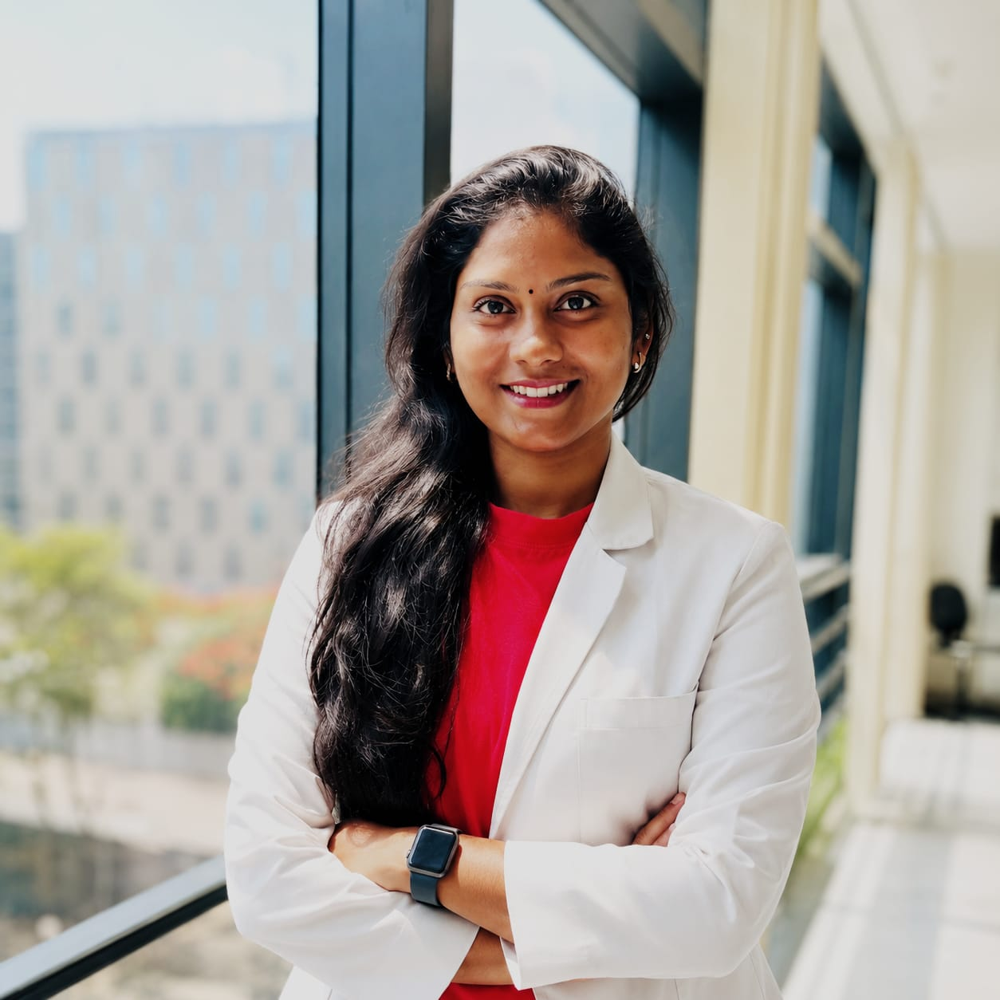
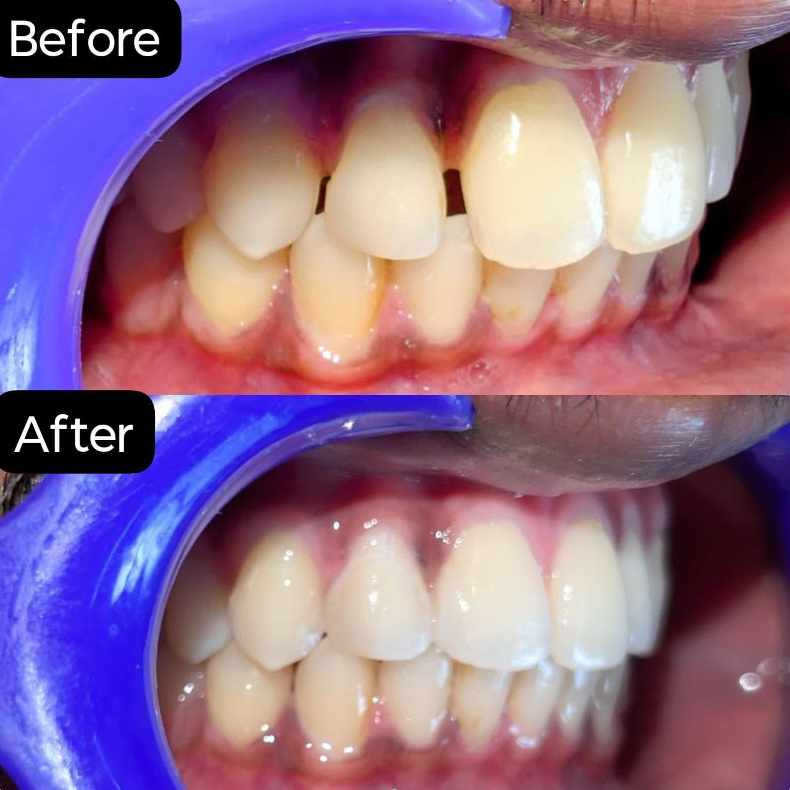
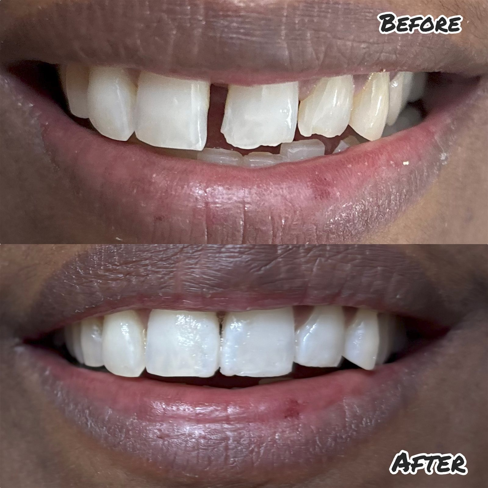

General Dental Care
Routine dental consultations, preventive care, and oral health management.
Compassionate and detail-oriented Dental Surgeon with 7+ years of experience in restorative, cosmetic, and preventive dentistry. Committed to delivering high-quality, patient-centered care and contributing clinical expertise and leadership in a progressive healthcare environment.
arunaboobalan31@gmail.comAvailable for: Clinic leadership roles, senior dental surgeon roles, professional collaborations, and community dental camps.

A concise view of clinical experience, leadership, recognition, and community contribution.
Experienced Dental Surgeon with strong expertise in oral diagnosis, restorative and prosthodontic treatments, cosmetic procedures, and pain management. Proven ability to deliver patient-focused care, manage high patient volumes, and lead clinical teams effectively.
Career progression across high-volume dental clinics, leadership roles, and community outreach programs.
August 2025 – Present
October 2019 – July 2025
My professional work spans clinical care, patient education, and community-oriented oral health initiatives. The full details are documented in the resume.
Routine dental consultations, preventive care, and oral health management.
Care focused on restoring function, comfort, and structural integrity of the teeth.
Root canal and related therapies aimed at preserving natural dentition and relieving discomfort.
Participation in health awareness and community-based dental initiatives with partner organizations.
Representative examples of restorative, cosmetic, and patient-centered dental treatment outcomes completed with attention to health, function, and confidence.

Professional hygiene-focused treatment to improve oral cleanliness, comfort, and healthier gums.

Restoration work to rebuild damaged tooth structure, improve function, and support patient confidence.

Clinical radiographic evaluation supporting accurate diagnosis and comfort-focused treatment planning.

Follow-up evaluation and monitoring to support successful treatment outcomes and long-term oral health.

Cosmetic planning designed to improve smile harmony while preserving natural tooth balance and function.

Esthetic rehabilitation focused on improving smile appearance and patient confidence with natural results.
Professional credentials and education details are summarized below, with the full resume available for complete review.
Key supporting details not to be missed from the resume profile.
For the complete professional details, career history, qualifications, and achievements, please view my resume. I am open to professional discussions, collaborations, and community healthcare opportunities.